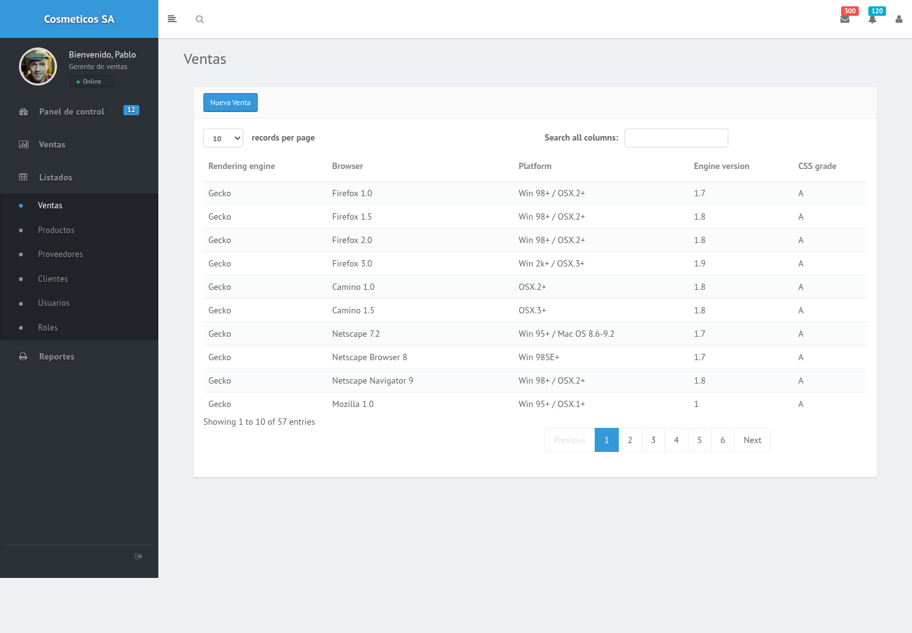
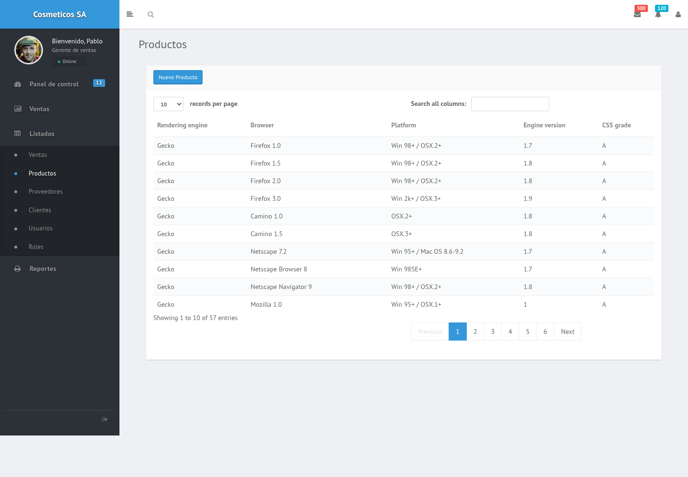
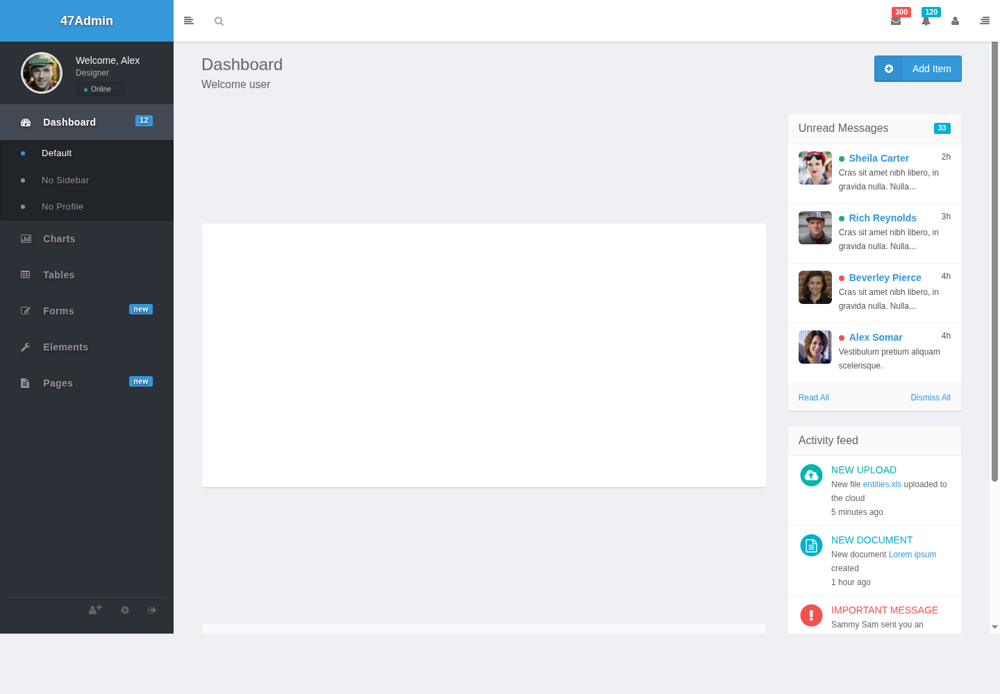
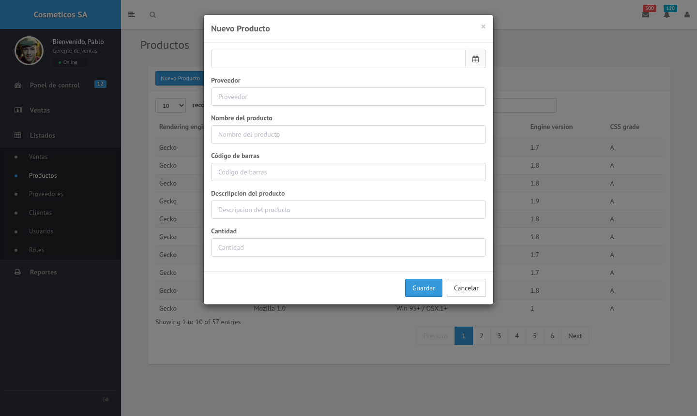

Cómo un solo layout resuelve el 80% de una app de gestión — y cómo pasar de ahí al wireframe que pide la rúbrica.
"Cosmeticos SA" es una empresa de venta de cosmética que necesita un back-office interno para que su equipo administrativo gestione ventas, catálogo, clientes, proveedores y usuarios del sistema. Estos son los requisitos mínimos que le dan sustento a las decisiones de diseño de las secciones siguientes — del análisis completo, tomamos solo lo necesario para justificar los patrones elegidos.
Como administrativo de ventas, quiero un listado buscable y paginado de clientes, para encontrar un registro puntual sin recorrer toda la base.
Como encargado de depósito, quiero cargar un producto nuevo sin salir del listado que estoy mirando, para no perder el contexto de lo que ya cargué hoy.
"Cosmeticos SA" no se diseñó desde cero: es el mismo template de dashboard
administrativo que existe en la galería (prosis360 → 47Admin),
clonado y re-etiquetado. El escenario docker-interfaces
de Killercoda muestra cómo se levanta técnicamente (Docker Compose + volumen + git clone
del repo interfaces)
— acá el foco es otro: qué gana el diseño visual al reciclarlo.


↳ compará el margen izquierdo de las dos capturas: es literalmente el mismo HTML.

clientes.html y roles.html quedaron con el
título "Proveedores" pegado sin actualizar, de una copia apurada. Reciclar el layout no es
copiar el archivo entero sin revisar cada texto.
Nombrar el patrón no alcanza — la rúbrica de EIDAS baja a "insuficiente" los patrones genéricos, sin relación con el caso analizado. Por eso cada uno de estos tres está atado a un requisito o una HU concreta del caso, no solo a "quedaba prolijo".
Shell es la parte de la pantalla que no cambia entre vistas — acá, el navbar y el sidebar — en contraste con el área de contenido, que sí cambia según el módulo. Se repite sin cambios en las cinco pantallas del caso (Ventas, Productos, Clientes, Proveedores, Usuarios/Roles): el usuario aprende dónde está cada cosa una sola vez — es exactamente lo que pide la consistencia de navegación entre módulos.
Todos los listados (clientes, productos, ventas, proveedores) usan una tabla buscable y paginada en vez de tarjetas — con volumen alto de registros, una tabla deja escanear muchas filas a la vez; una grilla de Cards obligaría a scrollear mucho más para la misma cantidad de información.
El alta ("Nuevo Producto", "Nueva Venta"...) no navega a una pantalla nueva: abre un modal de pocos campos sobre el mismo listado. Al cerrarlo — con o sin guardar — el usuario sigue exactamente donde estaba, sin perder el contexto de búsqueda o paginación que ya tenía armado.

Con esos tres patrones ya resueltos, cada módulo nuevo del caso es una combinación de los mismos tres — solo cambian los campos y las columnas.
| Módulo | Shell | Tabla | Modal de alta |
|---|---|---|---|
| Ventas | ✓ | ✓ | ✓ Nueva Venta |
| Productos | ✓ | ✓ | ✓ Nuevo Producto |
| Clientes | ✓ | ✓ | ✓ Nuevo Cliente |
| Proveedores | ✓ | ✓ | ✓ Nuevo Proveedor |
| Usuarios / Roles | ✓ | ✓ | ✓ Nuevo Usuario |
Los cinco módulos del caso se resuelven combinando tres patrones. El trabajo de diseño visual "grande" — cómo se navega, cómo se lista, cómo se da de alta — ya está resuelto antes de dibujar la primera pantalla nueva; lo que queda por diseñar en cada módulo es acotado: qué columnas muestra esa tabla y qué campos pide ese modal.
La rúbrica pide un wireframe por pantalla o módulo relevante. Ninguno de los dos caminos siguientes reemplaza la justificación — solo cambia cómo se produce la imagen.
Ningún grupo completó todavía su docs/diseño-ui.md — así que
esto sirve como primer ejemplo resuelto. Misma estructura exacta que el template real de
eidas-template, con el caso Cosmeticos SA ya adentro.
Capturas de la sección 01 y 02 de este apunte (listado y modal de alta).
Patrones de diseño utilizadosTabla con paginación, Modal con formulario corto.
JustificaciónEl encargado de depósito necesita revisar el catálogo completo y agregar productos nuevos sin perder de vista lo que ya cargó (RNF3). Una tabla con búsqueda y paginación permite escanear el volumen alto de productos que maneja Cosmeticos SA (RNF2) — una grilla de Cards obligaría a scrollear mucho más para la misma cantidad de información y no aporta nada extra para este usuario, que necesita comparar códigos y cantidades, no imágenes de producto. El alta se resuelve en un modal en vez de navegar a una pantalla nueva: al cerrarlo, el encargado sigue exactamente en el mismo listado, con el mismo filtro y la misma página que tenía abiertos.
FormularioMismo layout de listado que Ventas (sección 01), aplicado a la entidad Cliente.
Patrones de diseño utilizadosTabla con paginación, Modal con formulario corto.
JustificaciónEl administrativo de ventas necesita encontrar un cliente puntual sin recorrer toda la base (HU — Listado de clientes). La tabla permite buscar por cualquier columna y ordenar, lo que resuelve el caso de uso real ("¿este cliente ya está cargado?") mejor que un listado en Cards. El patrón de alta se mantiene igual al de Productos a propósito — es el mismo molde (RNF1): el administrativo ya sabe cómo se carga un registro nuevo antes de tocar esta pantalla por primera vez.
FormularioLos tres módulos restantes repiten exactamente la misma combinación de patrones que Productos y Clientes — shell fijo, tabla con paginación, modal de alta — así que no hace falta repetir la justificación completa. Es la prueba en la práctica de la sección "El 80%": una vez justificado el patrón, cada módulo nuevo solo aporta lo que cambia.
| Módulo | Patrones | Qué cambia respecto a Productos/Clientes |
|---|---|---|
| Ventas | Tabla + Modal | El modal de alta suma un selector de cliente y una lista de ítems con cantidad (stepper). |
| Proveedores | Tabla + Modal | Igual que Clientes, con campos propios (razón social, CUIT, rubro). |
| Usuarios / Roles | Tabla + Modal | El modal reemplaza los inputs de texto por checkboxes de permisos por módulo. |
El personal de depósito de Cosmeticos SA a veces carga productos con las manos ocupadas o con guantes, parado frente a la estantería — no sentado cómodamente frente a un monitor. Por eso los botones del modal (Guardar / Cancelar) tienen un tap target mínimo de 44×44px y alto contraste, y cada campo del formulario tiene una etiqueta asociada de forma explícita, no solo un placeholder — así un lector de pantalla identifica el campo aunque el placeholder desaparezca al empezar a escribir.